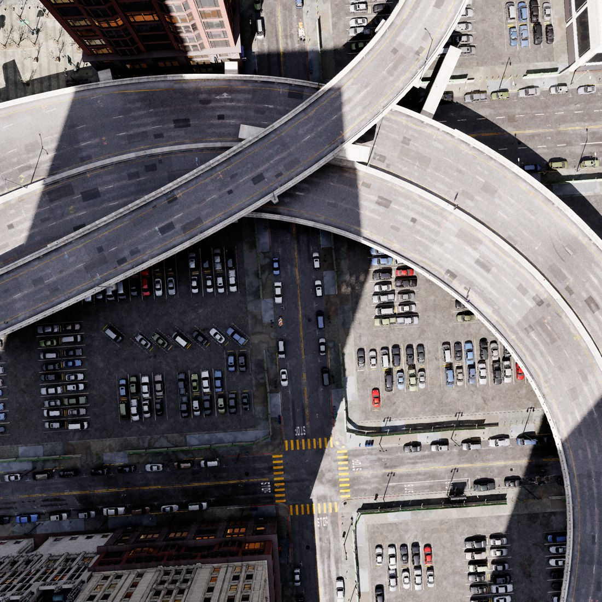
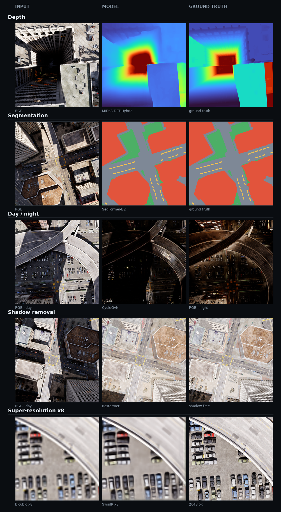

SyMTRS: Synthetic Multi-Task
Remote Sensing Dataset
arXiv 2026
1TOELT LLC AI lab
2HSLU (Lucerne University of Applied Sciences and Arts)
3armasuisse S+T
Abstract
Five modalities, one geometry
Every camera position is rendered as RGB by day and by night, with the direct sun removed, as metric depth and as a five-class mask. The registration is exact — the same frame, five times — so a task is a choice of folders rather than a separate dataset.
RGB · day → night → shadow-free → metric depth → five classes, on one held-out test scene. Generated by scripts/make_media.py.

Each pose is rendered once, with the environment frozen, so exposure, geometry and filename are shared by all five outputs. The ×2/×4/×8 levels are separate render passes, which is what makes the super-resolution pairs real pairs.
Monocular Depth Estimation
We provide pixel-perfect depth ground truth exported directly from UE5. Below are interactive point cloud visualizations reconstructed from our monocular depth maps, showcasing the high-density architectural detail preserved in our captures.
Super-Resolution (x2, x4, x8)
SyMTRS includes multi-scale paired imagery rendered at each level, not blurred in post. Drag the divider to compare a bicubic upsample with the SwinIR x8 checkpoint on the same 63 px input.

 Bicubic x8
SwinIR x8
Bicubic x8
SwinIR x8
Domain Adaptation (Day to Night)
Enabling zero-overhead data generation for day-to-night translation. Our dataset features perfectly aligned imagery across divergent illumination cycles, critical for robust 24/7 autonomous monitoring.
Full-Resolution Comparison
The MatrixCity simulation allows for deterministic camera placements with variable astrophysical time, so a CycleGAN or pix2pix model does not have to fight misalignment on top of the domain gap.

Day NightSemantic Segmentation (5 Classes)
Background, building, green, road and car, stored as a graylevel class id; pixels off the class grid decode to the ignore index rather than being guessed. Drag to compare the RGB frame with its mask.

 RGB
5 classes
RGB
5 classes
Shadow Removal
SyMTRS ships the shadow-free render as ground truth; the shadow mask itself is derived at train time, because the dataset has none. Drag to compare the shadowed and shadow-free captures.

 With shadow
Shadow-free
With shadow
Shadow-free
Input, model and ground truth
One held-out scene per task, from the test/ split: the input, a benchmark checkpoint's prediction, and the ground truth. Every panel is regenerated by scripts/make_media.py; the run directories it reads are recorded in docs/assets/media/media.json.

| Task | Model | Protocol | Test metric |
|---|---|---|---|
| Monocular depth | MiDaS DPT-Hybrid, 2048 px | fine-tuned, 20 epochs | RMSE 18.66 m · δ¹ 0.881 |
| Semantic segmentation | SegFormer-B2, 2048 px | fine-tuned, 40 epochs | mIoU 0.976 · pix. acc 0.994 |
| Day → night | CycleGAN | fine-tuned, 40 epochs | FID 43.4 · KID 0.0149 |
| Shadow removal | Restormer | fine-tuned, 50 epochs | PSNR 23.00 dB · SSIM-Y 0.788 |
| Super-resolution ×8 | SwinIR, 2048 px target | fine-tuned, 40 epochs | PSNR 20.02 dB · SSIM 0.469 |
3,000 test images per row, seed 42, from the campaign runs under runs/campaign2/. The dataset is being regenerated in response to reviewer comments; these numbers will be refreshed with the released revision and are not final.
Citation
If you use SyMTRS in your research, please cite the following paper.
@misc{elghazoualisymtrs,
title={SyMTRS: Benchmark Multi-Task Synthetic Dataset for Depth, Domain Adaptation and Super-Resolution in Aerial Imagery},
author={Safouane El Ghazouali and Nicola Venturi and Michael Rueegsegger and Umberto Michelucci},
year={2026},
eprint={2604.21801},
archivePrefix={arXiv},
primaryClass={cs.CV},
url={https://arxiv.org/abs/2604.21801},
}